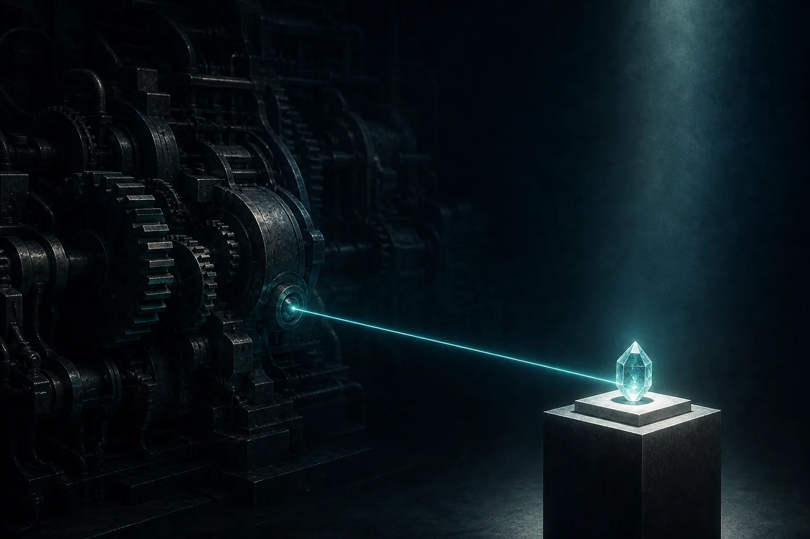
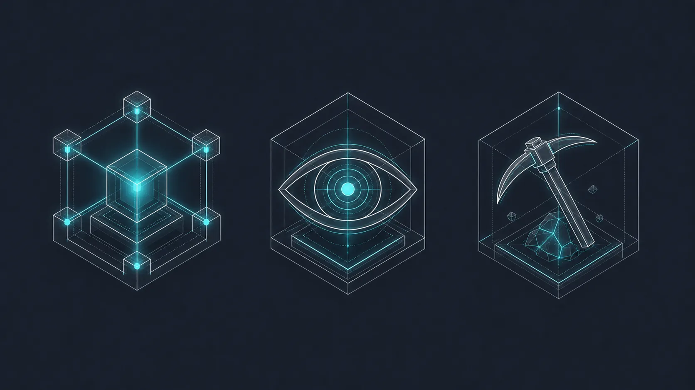

Two ways to build
In crypto there are basically two ways to design the thing: account-based and UTXO.
Ethereum and Solana-style account or shared-state systems have been treated as the place where the complex on-chain stuff lives. They hold the keys for rich applications. DeFi, games, lending, all of it. But that power has a bill attached. The base layer is carrying a lot of shared state and a lot of computation, and the more it carries, the heavier a node gets, and the heavier a node gets, the fewer people can actually run one, and there goes a chunk of your sovereignty. You can push performance up, but you usually pay for it somewhere, in node requirements or in some flavor of centralization creeping in.
Bitcoin and Zcash-style UTXO or output-based systems, plus Cardano's eUTXO, are the other bunch. They are more local. A transaction eats specific outputs and makes new ones, and that is the whole event. Not a giant shared world-computer where every app sits in global state bumping into each other. This is precisely why UTXO is lighter, and being lighter is a huge part of what makes Kaspa cool. The catch, the thing everyone "knew," is that UTXO is supposed to be the dumb-but-honest branch of crypto. Great for money, bad for expression. Bitcoin leans into this on purpose and creates harder workarounds to keep it as dumb as possible. Zcash and Monero spend their complexity budget on privacy, which is its own giant pile of tradeoffs. Cardano's eUTXO is clever yet also comes with its own compromises.
So the folk wisdom has settled into something tidy and a little lazy. Want real apps? Go account-based. Want a lean sovereign chain? Accept that it cannot really do much. Toccata is Kaspa walking up to this tidy little dichotomy and saying: huh, fuck that; let's try to push the limits. To be clear, this does not erase tradeoffs and it does not turn KAS into ETH or SOL. This is not what we want. The move is sneakier, and I would argue more elegant.

